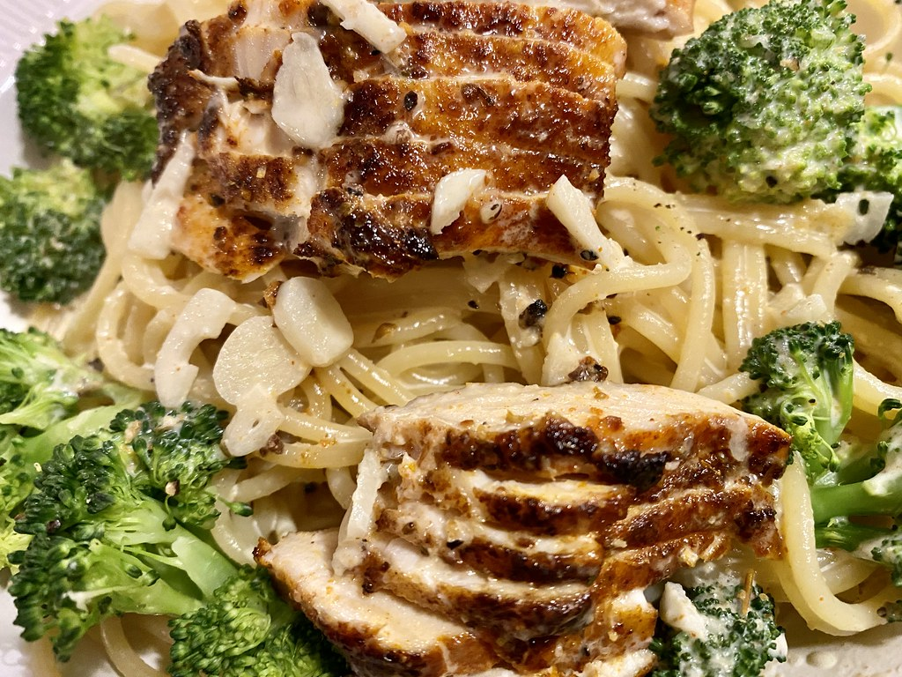

Chicken Alfredo

After reading this you will be able to make your own chicken alfredo from scratch!
Hopefully you have been able to taste the creamy richness of chicken alfredo before.
You should take that excitement and funnel it into making this amazing recipe that is simple to recreate.
Ingredients
Chicken
Heavy Cream
Butter
Basil
Salt and Seasoning to taste
- Salt
- Pepper
- Parsley
- Parmesan
- Noodles of choice(classically Fettuccine)
Steps to make your own Chicken Alfredo
- Boil the Noodles: Cook the fettuccine alfredo noodles to al dente according to the instructions of your package.
- Cook the chicken, and season according to taste: Pan fry in oil and butter for 6 minutes a side, or until internal temperature reaches 165 degrees F.
- Make the Alfredo Sauce: Using the sake pan you used to cook the chicken, add cream, butter, and seasoning on medium-low heat until thickened. After it has thickened incorporate Parmesan until melted and smooth.
- Assemble: Drain the pasta, reserving some of the pasta water to add to the alfredo sauce. Divide the pasta among serving bowls and top with slices of cooked chicken. Finish by garnishing with parsley, more parmesan, and black pepper if desired.